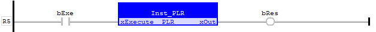

Function Block
Outputs a pulse at the rising edge of the input ‘xExecute’.
|
Name |
Type |
Description |
|
xExecute |
BOOL |
Its rising edge will output a cycle pulse on ‘xOut’. |
|
Name |
Type |
Description |
|
xOut |
BOOL |
Output a pulse if ‘xExecute’ falling edge detected. |
The output pulse will stay until the next call.
Output a pulse with the instance of PLR ‘Inst_PLR’ to output a pulse:
bExe := FALSE;
Inst_PLR(bExe);
bRes := Inst_PLR.xOut;
bExe := TRUE;
Inst_PLR(bExe);
bRes := Inst_PLR.xOut; //Output TRUE
Inst_PLR(bExe);
bRes := Inst_PLR.xOut; // Output changes to FALSE
The rising edge of ‘bExe’ will output a pulse on ‘bRes’:
